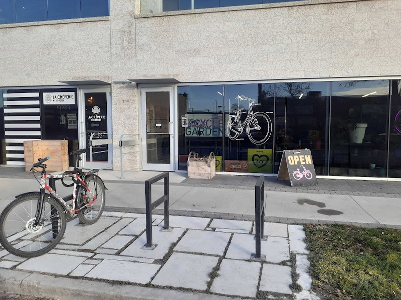

Renting a bike near the Corydon Airbnb

Winnipeg doesn't have a citywide dockless bike-share you can just unlock with an app, so if you didn't bring your own bike, the easiest option for guests staying at the Corydon/Crescentwood Airbnb is to rent one for the day (or longer) from a local shop. Here's where to go and a couple of ideas for where to ride once you've got a set of wheels.
Plain Bicycle / Bicycle Garden
The most guest-friendly rental option is Plain Bicycle, a non-profit bike shop that rents Dutch-style city bikes — comfortable upright singlespeeds and cargo bikes rather than road bikes — by the half-day, full day, week, or month. They have two Winnipeg locations:
- Bicycle Garden — 267 Sherbrook St, in the Sherbrook Flats building between Portage Ave and Broadway. This is their main shop.
- The Forks location — a rental kiosk set up in an antique train car at The Forks Market, open seasonally.
Both locations are a rideshare or transit ride from the Airbnb rather than a walk, but The Forks location is convenient if your bike day is already going to end up there — see our Corydon to The Forks by bike or foot post for the route. Hours vary by season and day of the week, so check plainbicycle.org or call ahead (204-306-4737) to confirm current hours and rates before heading over.
Good to know: Because Plain Bicycle is a small, appointment-friendly operation, it's worth reserving ahead online or by phone if you have a specific day and time in mind, especially on weekends.
Where to ride once you're rolling
Corydon Avenue itself is a comfortable, mostly flat ride with wide sidewalks and painted bike lanes in stretches, good for getting a feel for the neighbourhood before heading further out. From there, the riverside pathways along the Assiniboine River connect toward The Forks and Assiniboine Park, both popular rides for visitors with a rented bike for the day.
If a shop rental doesn't fit your schedule, a rideshare or taxi is a reasonable backup for getting around — Winnipeg Transit also covers the route downtown if you'd rather skip the bike entirely (see our Transit basics post).